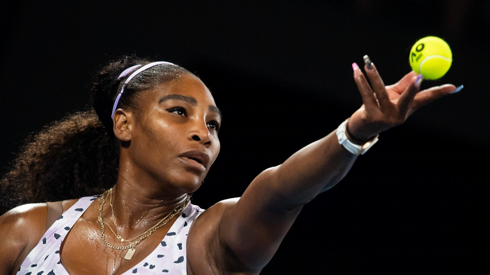
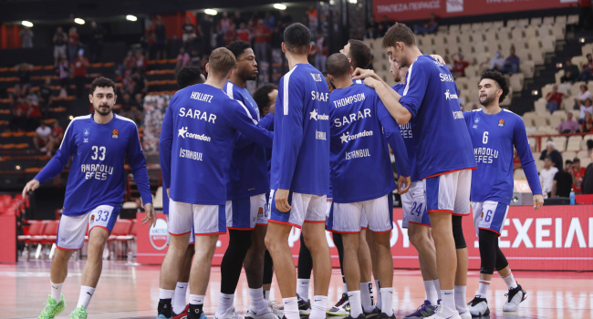

Serena Williams, Tenis Kariyerine Veda Ediyor
15 Kasım 2023 - Dünya çapında tanınan tenis şampiyonu Serena Williams, uzun ve başarılı kariyerine son
verme kararı aldığını duyurdu. Williams, bir basın toplantısında yaptığı açıklamada, tenis kortlarına
veda etme kararını almanın zorlu olduğunu ancak yeni bir bölümün başlaması gerektiğini belirtti.
Williams, kariyeri boyunca birçok Grand Slam turnuvasını kazanarak tenis tarihinde adını altın harflerle
yazdırmıştı. 23 Grand Slam zaferiyle, kadınlar arasında en çok Grand Slam zaferine sahip oyuncu olarak
öne çıkıyor.
Efsane tenisçi, emekli olma kararı almasının ardında fiziksel zorluklar ve ailesiyle geçirdiği daha
fazla zaman arzusu olduğunu ifade etti. Williams, tenis dünyasına bıraktığı etki nedeniyle tebrik ve
minnettarlık dolu sözlerle anılıyor.
Hakan Çalhanoğlu Serie A'da tarihe geçti!.
İtalya Serie A'da Inter forması giyen milli futbolcu Hakan Çalhanoğlu, yeni bir rekora imza attı. Ligin
12. haftasında oynanan ve Inter'in 2-0'lık üstünlüğüyle sona eren Frosinone maçında penaltıdan takımının
ikinci golünü kaydeden Hakan, 37 golle Serie A tarihinde en fazla gol atan Türk oyuncu oldu. 29
yaşındaki milli yıldız, 36 gollü Şükrü Gülesin'i geride bıraktı. Karşılaşmanın ardından konuyla ilgili
sosyal medya hesabından duygularını paylaşan Hakan, "Serie A'da en fazla gol atan Türk oyuncu olduğum
için mutlu ve gururluyum" ifadelerini kullandı..

Anadolu Efes Erkek Basketbol Takımı, THY Avrupa Ligi'nin 8. haftasında yarın deplasmanda Fransa'nın Monaco ekibiyle karşı karşıya gelecek.
Anadolu Efes, Monaco müsabakasıyla Avrupa kupalarındaki 809. maçına çıkacak.
Lacivert-beyazlı ekip, Avrupa kupalarında oynadığı 808 karşılaşmada 458 galibiyet ve 350 yenilgi yaşadı.
Anadolu Efes, 2001-2002 sezonundan itibaren katıldığı THY Avrupa Ligi'nde ise 561. maçını oynayacak.
Avrupa basketbolunun en büyük organizasyonunda 301 galibiyet elde eden lacivert-beyazlı ekip, 259 kez
rakiplerine mağlup oldu.